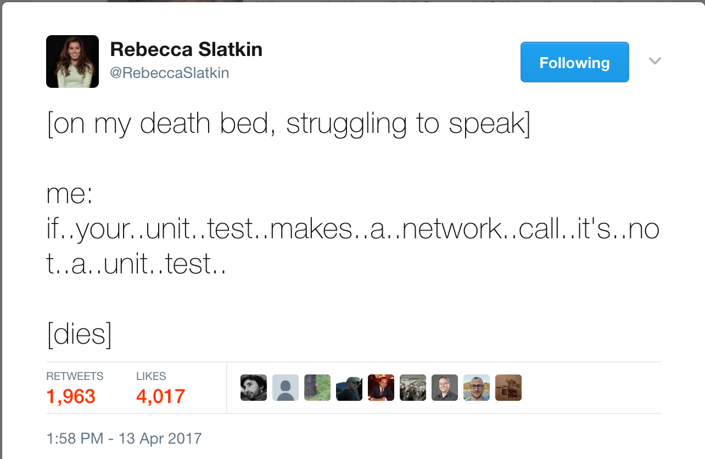

Testing PhoneGap Apps
Automating the Pain Away
Agenda
- The Why (~10 mins)
- Bugs and Regressions
- Safety Net
- Goal: Continuous Integration
- The How (~30 mins)
- Overview of Different Testing Approaches:
- Unit Testing (~15 mins)
- UI Testing (~15 mins)
- Automating Testing with Continuous Integration
- Overview of Different Testing Approaches:
- free-roam workshop time: hack, code, get help, show off demos
Ohai! I'm Fil

Ohai! who r u?
Designer? Developer? QA?
Why Test?
Audience Poll: Who does it?
Dedicated QA department?
Developers?
Unclear?
Why Test?
Audience Poll: What kind of testing?
Manual?
Unit?
Integration / End-to-End / Selenium?
Quality is everyone's responsibility.
Bugs
They suck. We have to fix them.
There's something worse than just a bug, though...
Regressions
A bug that, at one point, was identified and fixed, but at a later date, crept back into the product.
One of the biggest embarassments as a team delivering a product.
Preventing Regressions
- You release version 1 of your product. Yay!
- You realize there's a bug in it. Boo...
-
You fix the bug, but then you also write a little program to verify that the bug doesn't exist.
This little program is a test! - You release version 2 of your product, which includes your bug fix. Yay!
- Now every time you make a change, you run your test, effectively preventing you from ever releasing that same bug again.
LMAO, RIP, Bug
The Power of Testing
Testing is a safety net.
You are future-proofing your product.
It is also a powerful design tool (more on this later).
Testing is a discipline and is everyone's responsibility.
Continuous Integration

Next-Level Testing Power Up: The Holy Grail
Your tests being automated - fire and forget
Your automated test suite running on every commit.
Workshop Goal: instrument a PhoneGap app a) with tests and then b) automate them
How to Test
So many ways to approach testing your product - as many ways as there are to building it.
Testing Approaches
Different ways of experiencing and slicing your product up:
- Manual. Slow, error prone, human required.
- Unit. Testing code at the granular unit/module/class level.
- Visual. Does it look like what it's supposed to look like?
- Integration. Once you put all the pieces together, does it work?
Today we will be focussing on unit testing and integration/end-to-end testing specifically for PhoneGap apps.
Before we begin...
We will be testing a PhoneGap sample app called Star Track.
http://github.com/phonegap/phonegap-app-star-track
Let me demo it.
I have a branch of the sample app up on my fork that has all the various testing bits included. I will be walking through that code and demoing it throughout the workshop. Grab it if you don't already have it! https://github.com/filmaj/phonegap-app-star-track/tree/workshop-2017
Unit Testing
Testing the building blocks that make up your app, one block (or unit) at a time.
The driving assumption is that the majority of quality problems in your application come from your code/logic.
Therefore, we focus unit tests on your application's logic.
Unit Testing, cont.
As the first line of defense against bugs and regressions, we want unit tests to:
- Be easy to run, since we will run them all the time during development.
- Be fast. Slow unit tests make me less likely to run them.
How Not to Unit Test
Unit Testing a PhoneGap Application
A PhoneGap app is composed of HTML, JavaScript and CSS.
The logic in your code mostly exists in JavaScript.
So for your PhoneGap application, we will be unit testing JavaScript.
Quick Look at Star Track JavaScript
https://github.com/phonegap/phonegap-app-star-track/blob/master/www/js/my-app.js
So How Do We Unit Test This?
Three requirements:
- We need an environment where we can load our application's JavaScript and execute it.
- We need an environment where we can load our tests and execute them.
- We need the ability to report the test results.

A versatile JavaScript test runner that meets our three requirements, and works with any testing library.
Refer to Karma's site for installation, or just jump straight to my fork of the Star Track app.
Requirement 1
Environment for our JavaScript
To start, follow the installation guide to get all the Karma pieces in place - let's run through it quickly.
Let me walk through the Karma config to explain how Karma loads our app's JS.
Requirement 2
Environment for our Tests
Now let's take a look at some tests!
Let me walk through the Karma config to explain how Karma loads our tests.
Requirement 3
Reporting Test Results
Node.js is our main runtime, so let's create easy npm scripts to run our tests.
Let's give it a shot!
Essential Unit Testing Tool: Mocking
Recall that unit testing relies on isolating our logic to small units.
This can make executing code that is highly coupled to other units difficult.
Mocking is a technique where we use software dummies to stand-in for other units, dependencies or even function parameters in order to keep tests focussed.
End-to-End Testing
Also known as integration testing...
... and UI testing...
.. and other terms - but the idea is always the same:
Treat the software-under-test as a single, whole package, and interact with it as your customers do.
End-to-End Testing, cont.
This kind of testing used to be done manually.

End-to-End Testing, cont.
What we want is an automated way to replace UI interactions.
In that sense, it is the opposite of unit testing with mocking:
- No disassembling our code into small units we test individually - instead we test the entire application.
- No use of mocks - bring on the I/O.
Selenium
(aka WebDriver)
Selenium is a tool that enables automation. It tells other software to do things for you.
What is WebDriver?
It is commonly referred to as Selenium (for maximum confusion)
It is a specification for an HTTP API.
This HTTP API serves as an abstraction over proprietary, closed and/or differing UI automation APIs.
Free and open-source.
How Selenium Works

What is Appium?
An implementation (+extension) of the WebDriver specification...
... designed specifically for mobile (Android, iOS) platforms...
... allowing automation of native, hybrid and web applications.
Back to our App...
Similar to Karma for unit testing, Nightwatch is a test runner purpose-built for integration testing in a browser.
Let's set it up.
We need one more bit of glue: a runner.js script.
It will handle running phonegap serve for us, and kicking off nightwatch. Let's take a look.
Web Integration Test
Let's take a look at what integration tests in this case look like.
Let's give it a shot!
What about Mobile?
That Appium thing we talked about earlier - how do we get it to run our tests in a mobile environment?
Appium
But! The browser is not the same as a PhoneGap (hybrid) application:
Don't need to manage URLs.
Differentiating between "web" vs. "native" contexts.
Appium, cont.
We can easily factor out this difference in environments using a before clause in our tests. Let's take a look.
Let's Get Hacking!
Suraj and I will be wandering around, answering questions, helping with set up or issues, and generally available for the last bit of the workshop.